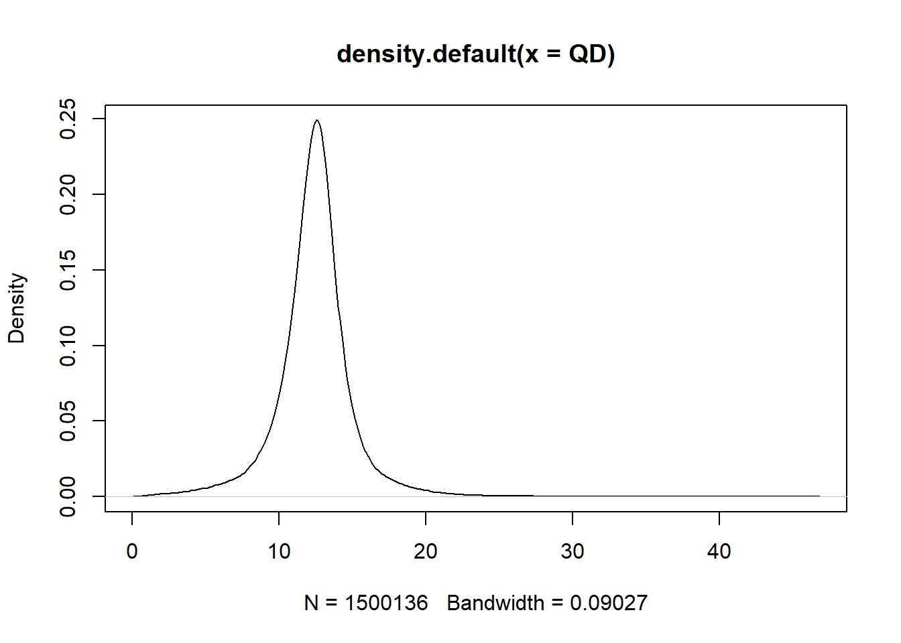

Use mirage-vs to test if there are signals in six variant groups
This figure shows the comparison between burden test (one side two sample poisson test) and mirage-vs for proband in 6 variant groups. \(\gamma=6\) for LoF variant and \(\gamma=3\) for missense when running mirage.
## # A tibble: 6 x 7
## X No_case No_contr OR pval eta_est eta_pval
## <chr> <int> <int> <dbl> <int> <dbl> <dbl>
## 1 PLI>=0.995 8339 11016 0.757 1 0.00656 8.25e- 64
## 2 pLI within (0.5,0.995) 21807 25655 0.850 1 0.00363 1.98e- 40
## 3 pLI<0.5 645131 662680 0.974 1 0.00335 3.69e-130
## 4 MPC>=2 130994 139388 0.940 1 0.00436 1.02e- 34
## 5 MPC within (1,2) 911616 929071 0.981 1 0.00305 9.57e- 48
## 6 MPC<1 27819128 27885193 0.998 1 0.00117 4.12e-183
Run mirage on all 17988 genes and \(\gamma=6\) for LoF variants and \(\gamma=3\) for missense.
| variant category | parameter | estimate | p value | |
|---|---|---|---|---|
| \ | \(\hat{\delta}\) | 0.0177 | 0 | |
| PLI>=0.995 | \(\hat{\eta}_1\) | 0.18 | \(1.81\times 10^{-66}\) | |
| 0.5<=pLI<0.995 | \(\hat{\eta}_2\) | 0.04 | \(4.68\times 10^{-39}\) | |
| pLI<0.5 | \(\hat{\eta}_3\) | 0.06 | \(3.97\times 10^{-130}\) | |
| MPC>=2 | \(\hat{\eta}_4\) | 0.06 | \(1.32\times 10^{-36}\) | |
| 1<=MPC<2 | \(\hat{\eta}_5\) | 0.12 | \(4.11\times 10^{-60}\) | |
| 0<=MPC<1 | \(\hat{\eta}_6\) | 0.05 | \(5.53\times 10^{-216}\) |
This R Markdown site was created with workflowr